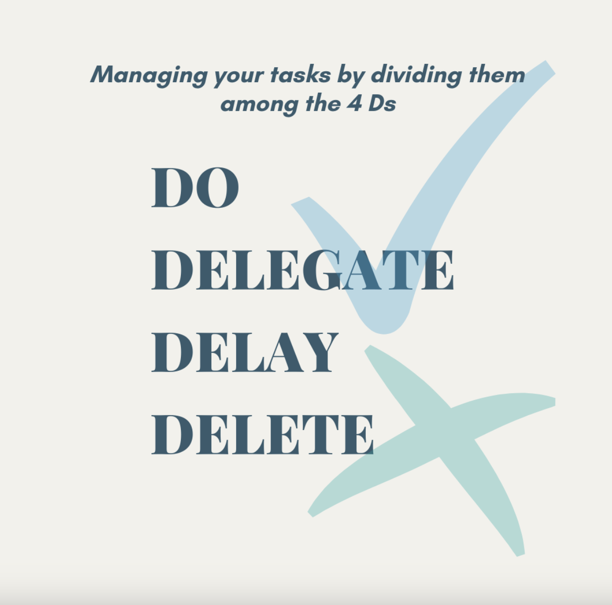
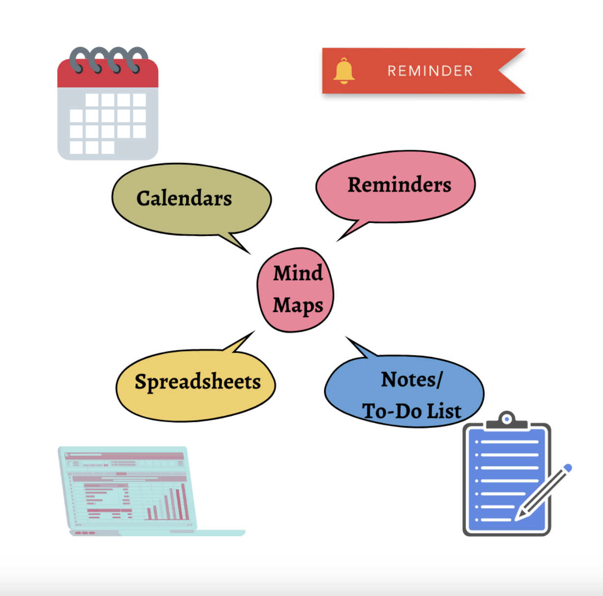

An important part of delegation is knowing which team member is the most
qualified to finish a particular task or project. If you can list and
organize your tasks and decide which to delegate, you may be able to improve
the productivity of your entire team.
Indeed editorial
(i) Clarity- Having clarity on every single detail given to you- mode of travel,
budgets, dates, location of accommodation, calendar schedule of your manager,
managing the meeting details, coordinating with the clients, and much more. The
first step is to have in-depth clarity of every task assigned to us. Once you
have the clarity, you move on to planning.
(ii) Planning- Now, what's the road map to this client meeting? What tasks do
you have to take care of, who would be involved in every task, what's the first
task on the plate, and how much time will every task take? These are a few
things that come to our mind once we're clear with what we have to do; hence,
planning to put on your master to-do list with appropriate resource allocation
will lead you to your first step of planning by evaluating all alternatives.
As this Harvard Business School article puts it, “Before an organization can
reap the rewards of its business strategy, planning must take place to ensure
its strategy remains agile and executable.”
(iii) Prioritizing work- Now that you have everything on paper, how do you know
which task is to take place first so that you save time without juggling too
many balls at once. For example, you must first work on calendar management by
checking the manager's schedule for the meeting. Only then can you move on to
the next step of deciding the dates as per the availability of the reservations
to be made. This step will help you minimize time and eliminate unrealistic
tasks.
(iv) Visualizing problems- Are you able to think what can be the delays in your
tasks? Do you have a contingency plan if the flight gets delayed or what if the
client meeting is moved one day ahead of its schedule? It's equally important to
mentally rehearse and prepare for these problems with your plan B.
(v) Delegation of tasks- You're not working alone. You have a finance team to
coordinate with for the budgets, involving external teams/individuals to book
accommodation/flights, and maybe much more. Delegation of tasks gives us an
estimation of time, breaking down tasks into subtasks and coordinating from
there on. It shows how well can transfer tasks and manage individuals, teams,
and organizations by sharing the desired outcome.

You can use these options to categorize your tasks into when you should do it,
should you even do it, or get it done by someone else.
Use Do for when you think a task is priority and needs to be done immediately
for the planning to work.
Use Delegate for when you think a task is important but your time could be
better spent somewhere else.
Use Delay for tasks which are not a priority.
And Delete the tasks which are not worth doing.
(vi) Adaptability- Lastly, what if another task is assigned to you that leads to
a change in your priority? What if your manager has to go to Mumbai tomorrow for
a small event? Will you be able to adapt to this change of changing your task
schedule and move on to a new task entirely as per the requirements? Uncertainty
is a part of the game, and learning how to manage changing priorities remains
equally important.
How to acquire the Ability to Organize?
Now that you have understood the steps to approach, plan, and go about
organizing in general, you must be wondering about how to practically learn
these skills. Well, here's how:
1) Make To-Do Lists - When you have your to do list, you have the potential of
getting things done and being productive. If you make your own to-do lists, it
will be easier to find what's missing and solve whatever problems could arise.
You'll be able to manage all the tasks in a way that each individual task can be
prioritized and organized effectively.
2) Use a Calendar to Plan - Having a calendar to plan is highly important. It
will give you key dates and times which need to be considered when you're
planning your tasks.
3) Collaborate with Team Members - There are times when we have to delegate the
task to external people in the form of a team. It's here where collaboration
among team members is crucial, especially when it's not just one person
completing the task but several individuals working together at various
locations, time zones, etc.
Aristotle puts it best - “The whole is greater than the parts.”
4) Use Mind Maps & Tools - There are tools you can use to enable collaboration
and make the task of remembering and mapping concepts easier. Such aids help
nail down the interconnectedness of tasks, make the task simple and easy to
manage, and to-do lists become visual instead of just being a list within a
list.( E.g. Notion, OneNote, etc.)

5) Take Breaks - It's important that we take breaks from time to time so as to
stay fresh and alert. By taking breaks, it will help you in managing your time
effectively, whether it be in restoring your energy levels for continuing with
your tasks or getting some fresh air for your mind.
6) Get Feedback - Having strong relationships with those around you helps
immensely in meeting the expectations of clients and projects which are the key
factor for success when executing assignments. Getting feedback is vital so that
problems can be identified before they crop up by affecting us negatively.